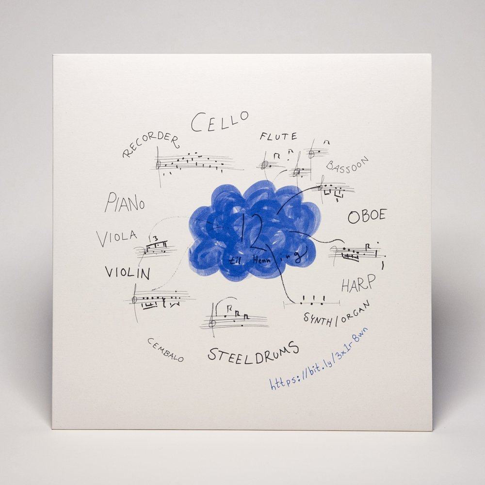

12 instrumenter til Henning · 2020
12 instrumenter til Henning (english: 12 instruments for Henning) is a composition by Danish composer Anders Lauge Meldgaard that explores the music of Danish avant-garde artist and composer Henning Christiansen. A trio piece by Christiansen from 1975 is the source material for a bright and stimulating new work for extended chamber ensemble, with the tonal language the original blossoming outwards via ALM’s own brilliantly colourful sound palette. The album will be released September 7th 2020 on vinyl and digital through the artist driven label and collective År & Dag, that ALM is part of.
12 instrumenter til Henning was originally commissioned by The Museum of Contemporary Art in Roskilde (Denmark) for an exhibition on Christiansen, who has seen quite the revival with international re-releases and exhibitions within the last five years. On occasion of the exhibit, a proposal was made for Meldgaard to do a recomposition of the first two movements in Christiansen’s Trio. Om tiden der gik (eng: Trio. About the time that passed) (opus 91, 1975) written for recorder, piano and cello. The outcome serves as a fascinating unfolding of Henning Christiansen’s musical practice, but foremost it is a perfect example of the unique expression that is signature for ALM as an artist and composer.
Note by note, ALM has transformed the music of Christiansen from the original trio score into a new radiant composition. Each part is rewritten through a thoughtful system created by Meldgaard, who reflects on the proces: “I’ve imagined how Hennings piece has grown older, the instruments have grown in size, they’ve propagated and changed their pace”. The three original instruments mutate into twelve: the recorder takes the form of a whole woodwind section while the piano spreads out to cover keyboard instruments such as harpsichord, synth and organ and the cello parts play out on several string instruments. Furthermore, autonomous tempi are assigned for all the new voices. Each instrument operates at its very own pace, creating in total a unity of freely intertwined multilayered pulses.
12 instrumenter til Henning takes off in the middle of a cloud of sound, 12 timbres all resonating with each other in a beautiful cacophony. From here, the 37 minute long piece unfolds little by little. After around 8 minutes, the cloud evaporates and reveals a highly organic arrangement within the ensemble. Like walking through unknown greenery, each instrument blossoms in turn, flowering phrases and rippling melodies. With 12 instrumenter til Henning, ALM demonstrates his impeccable ability to combine minimalism with romanticism, a bright expression making sense of something indecipherable.
Performing musicians:
Recorder: Kirsten Aage
Flute: Adam Woer
Oboe: Mette Termansen
Bassoon: Sebastian Stevensson
Violin: Bettina Marie Ezaki
Viola: Mika Persdotter Svensson
Cello: Nicole Hogstrand
Harp: Ysella Almquist
Piano: Mattias Branner
Hapsichord: Yngvild Ruud
Synth & organ: Annabelle o’Laetita
Steeldrum & gongs: Ying-Huseh Chen
Total playing time 37' 17'' min.
Composed by Anders Lauge Meldgaard
Mix & master by Andreas Pallisgaard
Recorded at Port 2 and The Village Studio, January 2019.
Thanks to Museum of Contemporary Art in Roskilde & Statens Kunstfond
Special thanks to Magnus Kaslov, Kristian Lauge Meldgaard & Kevin Krogh
Released September 7th 2020 on 12"vinyl as well various digital platforms.
Listen or buy here
Review from The Wire